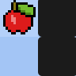

Ailesi ile yaşar. 3 erkek kardeşi vardır. 15 yaşındadır.
Ankara'da İmam Hatip Lisesi'ne giden 9. sınıf öğrencisi.
18/10/2010'da İstanbul'da doğmuştur. İstanbul'dan 1. sınıfın yarısında babasının işi sebebiyle Ankara'ya taşınmak zorunda kalmışlardır. Babası endüstri mühendisi, annesi mimardır. Abisi 19 yaşındadır ve üniversiteye gidecektir. Diğer kardeşi ise onun ikizidir ve 9. sınıfa gitmektedir.
Tarih: 04/07/2025
